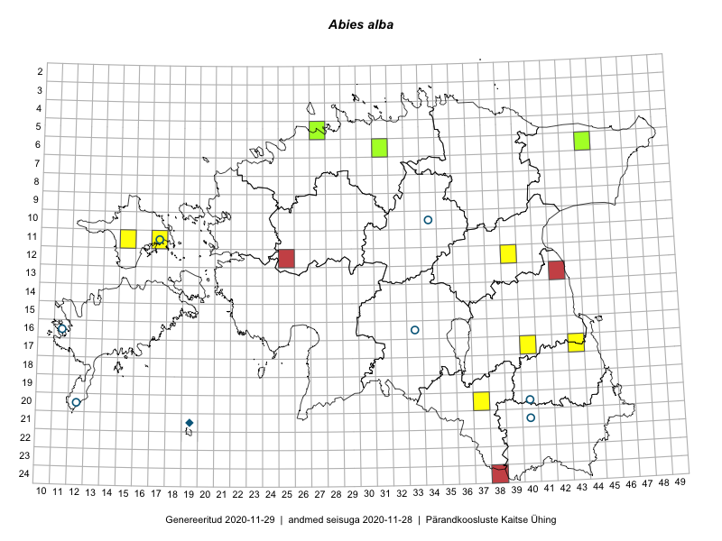

Abies alba
Uuendatud: 2016-12-02
Kaardile koondatud taksonid: Abies alba Mill.

Kaart põhineb 12 vaatlusel. Taksonit on leitud 6 ruudust.
Viited andmebaasikirjetele
- Thea Kull, Meeli Mesipuu: 2015-04-16: 12-39: GPS punkt
- Eeva-Maria Jeletsky, Tarmo Niitla: 2015-06-27: 11-15: GPS punkt
- Eeva-Maria Jeletsky, Tarmo Niitla: 2015-06-27: 11-15: GPS punkt
- Eeva-Maria Jeletsky, Tarmo Niitla: 2015-06-27: 11-15: GPS punkt
- Eeva-Maria Jeletsky, Tarmo Niitla: 2015-06-27: 11-15: GPS punkt
- Eeva-Maria Jeletsky, Tarmo Niitla: 2015-06-20: 11-17: GPS punkt
- Eeva-Maria Jeletsky, Tarmo Niitla: 2015-06-27: 11-15: ala
- Eeva-Maria Jeletsky, Tarmo Niitla: 2015-06-20: 11-17: ala
- Eeva-Maria Jeletsky, Tarmo Niitla: 2015-08-11: 20-37: GPS punkt
- Eeva-Maria Jeletsky, Tarmo Niitla: 2015-08-11: 20-37: ala
- Meeli Mesipuu, Liina Oja: 2015-04-25: 06-44: GPS punkt
- Rein Kalamees, Eerik Leibak: 2016-06-13: 17-43: GPS punkt